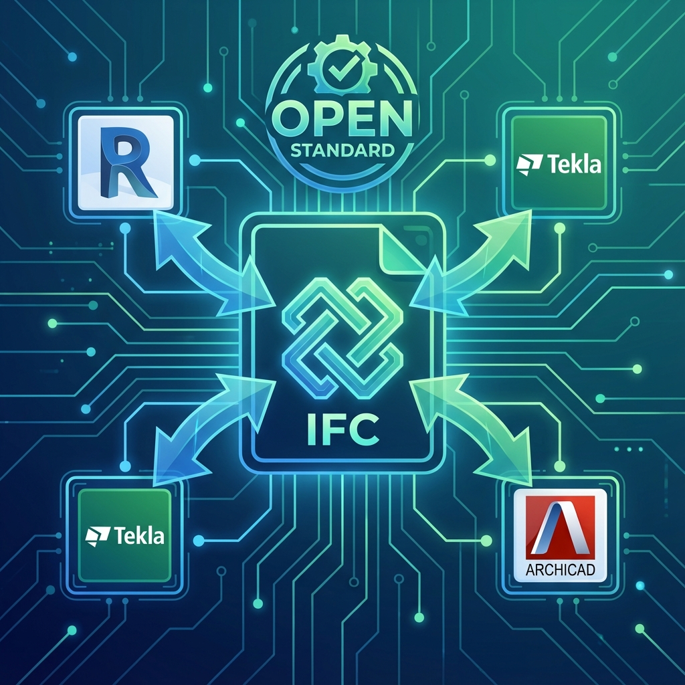

📚 هذا المقال جزء من سلسلة معايير BIM: EIR → BEP → CDE → LOD → IFC → COBie
📋 الفهرس
- ما هو IFC؟
- لماذا نستخدم IFC؟
- بنية IFC
- إصدارات IFC
- Model View Definitions (MVD)
- التصدير الصحيح من Revit
- فحص ملفات IFC
- أفضل الممارسات
📄 1. ما هو IFC؟
IFC (Industry Foundation Classes) هو معيار مفتوح ومحايد لتبادل بيانات BIM بين برامج مختلفة. تديره منظمة buildingSMART الدولية.
1.1 التعريف:
IFC = "لغة مشتركة" للتواصل بين برامج BIM المختلفة بدون فقدان البيانات.
1.2 خصائص IFC:
- مفتوح: غير مملوك لشركة معينة
- محايد: يعمل مع جميع البرامج
- معياري: ISO 16739
- قابل للتوسع: يدعم التطوير المستقبلي
🎯 2. لماذا نستخدم IFC؟
2.1 السيناريو النموذجي:
🏛️ المعماري (Revit)
🔩 الإنشائي (Tekla)
❄️ الميكانيكي (Revit)
←
📁 IFC
←
🔍 التنسيق
Navisworks/Solibri
⚠️ Clash Detection
2.2 فوائد IFC:
| التحدي | الحل مع IFC |
|---|---|
| برامج مختلفة لا "تتحدث" معاً | لغة مشتركة للجميع |
| الاعتماد على شركة واحدة | معيار محايد |
| فقدان البيانات عند التحويل | تحويل موحد |
| إرسال ملفات ضخمة | ملفات IFC أصغر |
| حماية الملكية الفكرية | تصدير ما تريده فقط |
2.3 متى نستخدم IFC؟
- ✅ التنسيق بين تخصصات تستخدم برامج مختلفة
- ✅ Clash Detection في برامج محايدة
- ✅ تسليم نماذج للمالك
- ✅ أرشفة طويلة المدى
- ✅ متطلبات العقد (openBIM)
🏗️ 3. بنية IFC
3.1 الهرمية الأساسية:
📁 IfcProject
📍 IfcSite
🏢 IfcBuilding
📊 IfcBuildingStorey
IfcWall
IfcColumn
IfcBeam
IfcSlab
IfcDoor
IfcWindow
3.2 مكونات العنصر (IfcElement):
- Geometry: الشكل الهندسي ثلاثي الأبعاد
- Properties: الخصائص (المادة، التكلفة...)
- Relationships: العلاقات مع عناصر أخرى
- Classification: التصنيف (UniClass, OmniClass...)
3.3 Property Sets:
مجموعات خصائص موحدة لكل نوع عنصر:
| Pset | الاستخدام |
|---|---|
| Pset_WallCommon | خصائص الجدران |
| Pset_ColumnCommon | خصائص الأعمدة |
| Pset_DoorCommon | خصائص الأبواب |
| Pset_BuildingCommon | خصائص المبنى |
📊 4. إصدارات IFC
4.1 تطور الإصدارات:
| الإصدار | السنة | الحالة |
|---|---|---|
| IFC 2x3 | 2006 | الأكثر انتشاراً (حتى الآن) |
| IFC4 | 2013 | ISO 16739:2013 |
| IFC4 ADD2 TC1 | 2017 | ISO 16739-1:2018 |
| IFC4.3 | 2022 | ISO 16739-1:2024 (البنية التحتية) |
4.2 IFC 2x3 vs IFC4:
| الميزة | IFC 2x3 | IFC4 |
|---|---|---|
| الدعم | ممتاز (جميع البرامج) | جيد (متزايد) |
| الهندسة | محدودة | أفضل (NURBS, Tessellation) |
| 4D | محدود | مدعوم |
| MEP | جيد | أفضل |
| البنية التحتية | لا | نعم (IFC4.3) |
📐 5. Model View Definitions (MVD)
5.1 ما هو MVD؟
MVD (Model View Definition) هو مجموعة فرعية من IFC تُحدد ما يجب تصديره لاستخدام معين.
5.2 أنواع MVD الشائعة:
| MVD | الاستخدام | المحتوى |
|---|---|---|
| Coordination View 2.0 | التنسيق العام | هندسة + خصائص أساسية |
| Reference View | المراجعة والتنسيق | هندسة مُحسّنة |
| Design Transfer View | نقل التصميم | هندسة قابلة للتحرير |
| Quantity Takeoff View | حصر الكميات | هندسة + كميات |
💻 6. التصدير الصحيح من Revit
6.1 خطوات التصدير:
- File → Export → IFC
- اختر IFC Version: (IFC4 Reference View للتنسيق)
- Modify Setup:
- General: Phase, Coordinates
- Property Sets: Export Revit property sets
- Level of Detail: Medium/High
- Export
6.2 إعدادات مهمة:
| الإعداد | القيمة المُوصى بها | السبب |
|---|---|---|
| IFC Version | IFC4 Reference View | الأحدث والأكثر توافقاً |
| Phase to Export | Current Phase | تجنب التعارضات |
| Split Walls by Level | Yes | تنظيم أفضل |
| Export Base Quantities | Yes | حصر الكميات |
| Coordinate Base | Shared | التنسيق مع النماذج الأخرى |
6.3 IFC Export Classes:
تأكد من تعيين Class الصحيحة لكل عائلة:
Revit Category → IFC Class
─────────────────────────────────────
Structural Columns → IfcColumn
Structural Framing → IfcBeam
Floors → IfcSlab
Walls → IfcWall / IfcWallStandardCase
Doors → IfcDoor
Windows → IfcWindow
✅ 7. فحص ملفات IFC
7.1 أدوات الفحص:
- Solibri Model Checker: فحص شامل للجودة
- BIM Vision: عارض مجاني
- FZK Viewer: عارض مجاني من KIT
- ifcOpenShell: مكتبة Python للفحص
- BIMcollab ZOOM: عارض مع BCF
7.2 قائمة فحص IFC:
- ☐ جميع العناصر موجودة
- ☐ التصنيفات صحيحة (IfcClass)
- ☐ Property Sets مُصدّرة
- ☐ الإحداثيات صحيحة
- ☐ لا توجد عناصر مفقودة
- ☐ الهندسة سليمة
💡 8. أفضل الممارسات
8.1 نصائح للنجاح:
- ✅ اختبر التصدير مبكراً في المشروع
- ✅ استخدم MVD المناسب للاستخدام
- ✅ تأكد من IFC Class لكل عائلة
- ✅ استخدم Shared Coordinates
- ✅ صدّر Property Sets المطلوبة فقط
- ✅ افحص الناتج في عارض محايد
8.2 أخطاء شائعة:
- ❌ تصدير بدون فحص
- ❌ استخدام إصدار قديم بدون سبب
- ❌ تجاهل IFC Class Mapping
- ❌ عدم تصدير Shared Coordinates
المقال التالي: COBie: تسليم بيانات التشغيل - الدليل الشامل